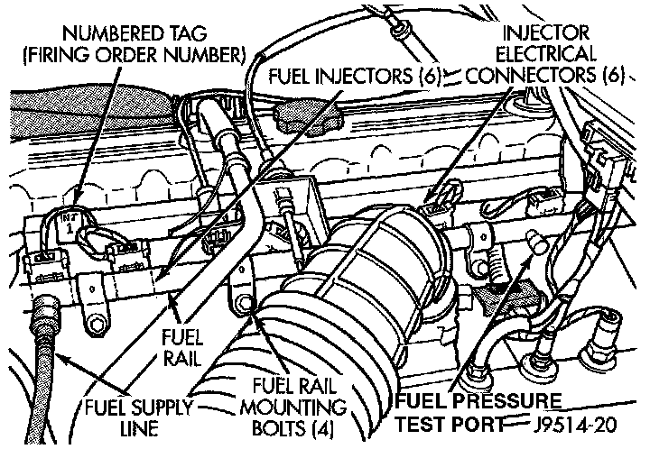

Fuel Pressure Test Port: Locations
WARNING: The fuel system is under constant pressure, even when the engine is OFF. Always release fuel pressure before servicing any fuel system component.Fuel Rail, Fuel Pressure Test Port - Typical:

The fuel pressure test port is located on the fuel rail.